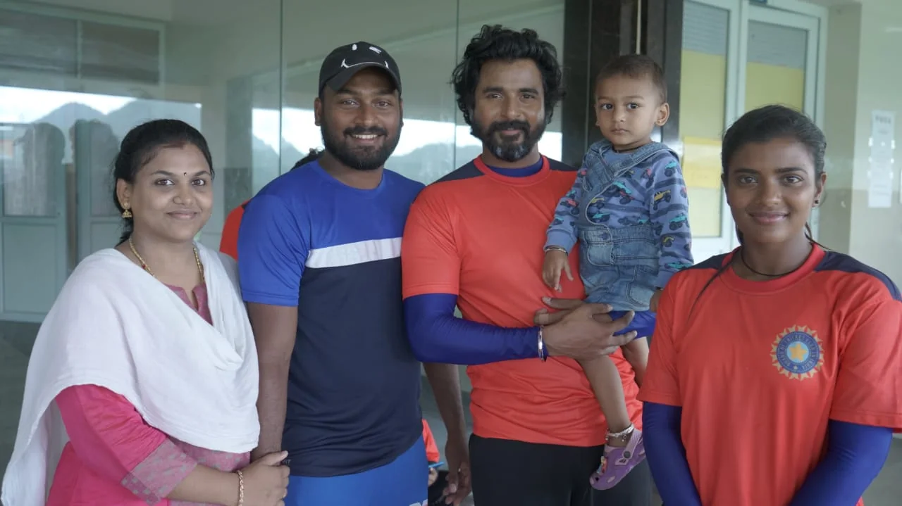
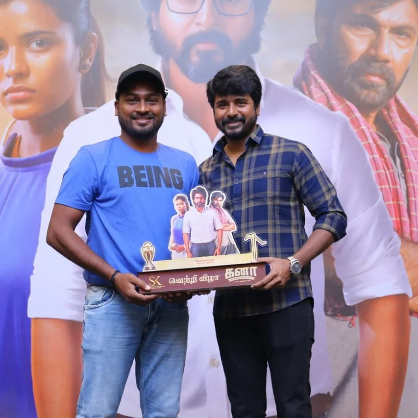
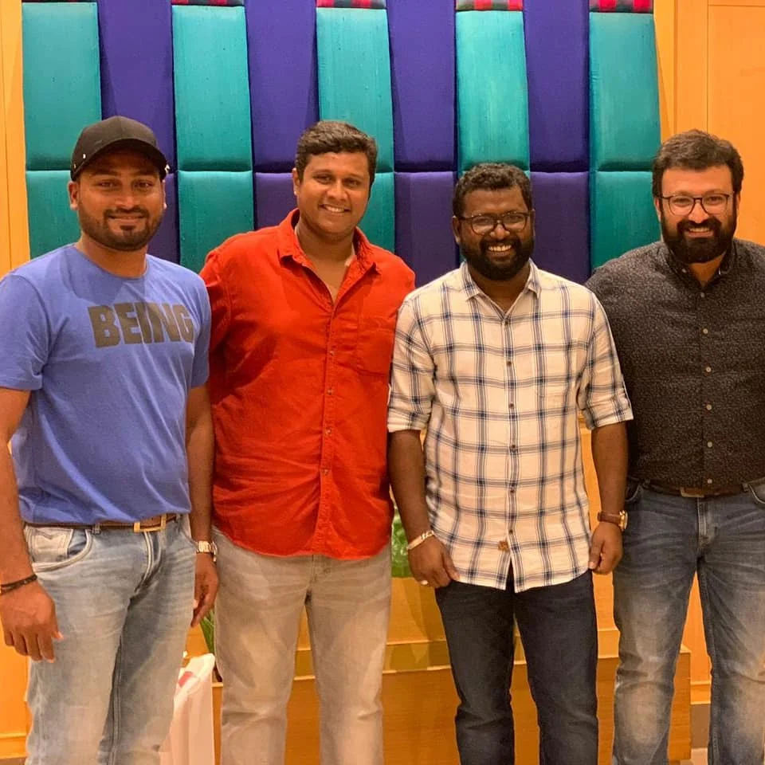
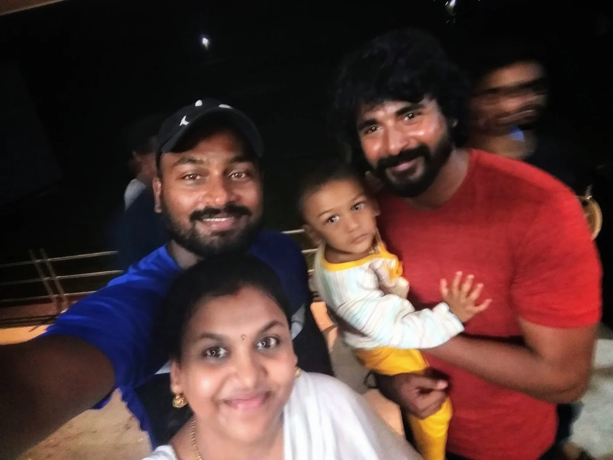
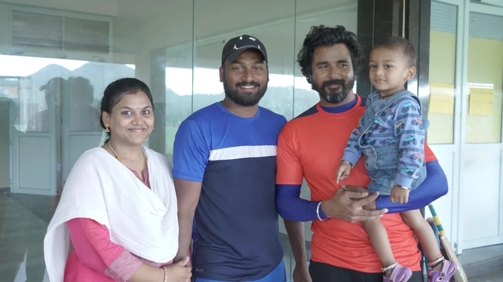

GETTING THE
TECHNIQUE RIGHT
A cricket film only works if the cricket looks real — and that starts with the actor holding the bat correctly, whatever the camera ends up showing. For the female lead in Kaana (2018), that meant learning genuine batting fundamentals from a coach, not just miming a shot for a close-up.
He wasn't cast in the film — the on-screen cricketer is Sivakarthikeyan. His work happened entirely behind the camera: training sessions with the cast so the sport would hold up once the film was released.





A note on this page: His role on Kaana was coaching the actress on cricket technique behind the scenes — not a cricketing or acting role in the film itself. On screen, the film's cricket is played by Sivakarthikeyan.